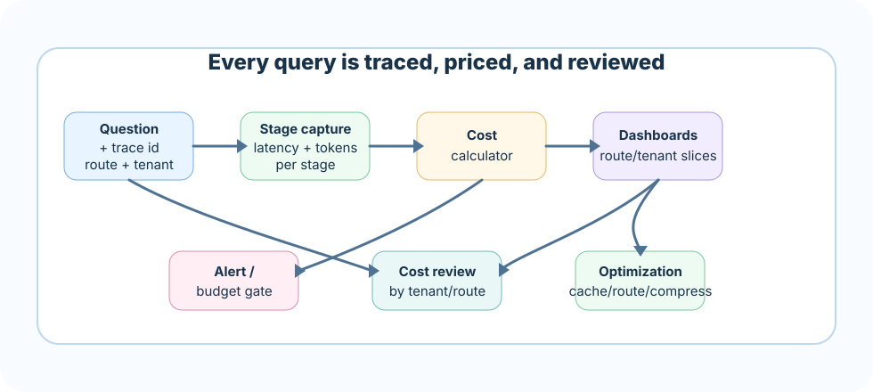

Observability lets you explain what happened. Cost controls let the product survive real usage. A production RAG system needs both from the first serious build.
How to read this chapter
Trace the journey: every answer should be explainable from question to final response.
Measure by stage: retrieval, rerank, model, evals, and post-processing all have different latency and cost profiles.
Connect cost to quality: spending more is acceptable only when quality, safety, or business value improves.
Design for operations: dashboards, alerts, budgets, and failure reviews are part of the product.
A user says "the assistant was wrong" and a bill arrives that is three times last month's. Without observability and cost data, both are just feelings. With them, both become facts you can act on.
Core ideaObservability and cost management means capturing a trace and a price for every RAG answer, so the team can explain what happened at each stage and control what it costs to keep happening.
Sub-topic 1 of 12
Trace First
A trace explains one answer. When a user says "the assistant was wrong," a trace lets the team inspect route, filters, retrieved chunks, prompt version, model call, citations, and evaluation result.
Trace anatomy
trace_id
user question
intent and route
retrieval query and filters
candidate ids and scores
reranker input/output
final context pack
prompt version and model
answer, citations, quality checks
user feedback and cost
Sub-topic 2 of 12
Real-Life Analogy: The Car Dashboard
You do not wait for the engine to seize before you check the gauges. A car dashboard shows speed, fuel, engine temperature, and warning lights continuously, so a small problem gets fixed at the next service stop instead of becoming a breakdown on the highway. Observability in RAG works the same way: stage latency, token counts, and error rates are the gauges that let a team catch a slipping retriever or a runaway prompt before a user files a complaint.
Now picture a fleet manager who watches fuel cost per mile across a hundred vehicles instead of one dashboard on one car. One route through the mountains burns far more fuel than a flat highway route, and if the manager only looks at the fleet average, that expensive route hides in plain sight. Watching cost per query across routes, tenants, and models is the same discipline: averages flatten the picture, and the one expensive route quietly drains the budget until someone finally slices the data and finds it.
Sub-topic 3 of 12
Stage Latency
Overall latency is not enough. You need stage latency. If p95 is slow, is retrieval slow? Is reranking too large? Is the model waiting on a long prompt? Is an evaluator running synchronously?
Track candidate count, timeout rate, fallback rate, and p95 latency.
Generation
Track prompt tokens, completion tokens, model latency, retry count, and provider errors.
Sub-topic 4 of 12
Token Usage
Token usage is one of the clearest cost signals. Track system prompt tokens, evidence tokens, user tokens, answer tokens, duplicate context tokens, and dropped-context reasons.
A practical signal is wasted context ratio: how much context was sent but not used in citations or answer support. High waste usually means poor retrieval precision, weak dedupe, or too-large final k.
Sub-topic 5 of 12
Cost Is Architecture
Cost is not only provider pricing. Cost comes from top-k, reranking pool size, prompt length, model choice, retries, poor caching, unnecessary evaluations, and weak routing.
Cost north starSpend more only when it buys measurable quality, safety, or business value.
A high-value policy answer may deserve reranking and a stronger model. A simple FAQ may not.
Sub-topic 6 of 12
Cost Levers
Cache
Reuse stable work
Cache retrieval results, context packs, or full answers for stable FAQ and policy queries.
Route
Match cost to risk
Use smaller models or skip reranking for low-risk routes.
Compress
Reduce context
Compress safely while preserving facts, citations, conditions, and exceptions.
Batch
Move offline work
Run expensive evals, indexing checks, and summaries asynchronously where possible.
Sub-topic 7 of 12
Architecture View

Every query carries a trace id through stage capture and a cost calculator, then fans out into dashboards, alerts, and optimization actions.Sub-topic 8 of 12
Dashboards
Dashboards should be sliced by route, tenant, model, index version, risk class, and source type. Averages hide expensive tenants, failing domains, and high-risk regressions.
Dashboard tiles
p50/p95 latency by stage.
Cost per query and cost per successful grounded answer.
Cache hit rate and cache savings.
Empty retrieval rate and fallback rate.
Citation support and refusal correctness trends.
Sub-topic 9 of 12
Common Mistakes
M01
Only logging final answers
Symptom: you cannot debug retrieval, tokens, or latency from the answer alone.
Better move: capture a full trace per query, not just the final text.
M02
No per-stage latency
Symptom: the team cannot tell whether retrieval, rerank, or model call is slow.
Better move: time every stage and store it alongside the trace.
M03
No cost owner
Symptom: token spend grows quietly until someone outside engineering complains.
Better move: assign an owner and a budget to cost the same way you would for latency or errors.
M04
Cutting cost blindly
Symptom: reducing context or model quality without evals can save money while breaking trust.
Better move: pair every cost cut with a quality check before it ships.
M05
Alerting on averages, not tails
Symptom: mean latency looks healthy while a real slice of users hit multi-second waits or timeouts.
Better move: alert on p95 and p99 per stage, not just the mean, so tail incidents get caught.
M06
No cost attribution by tenant or route
Symptom: total spend rises and nobody notices that one route or tenant is driving 80% of it.
Better move: tag every trace with tenant and route, and slice cost dashboards by both.
M07
Caching without invalidation
Symptom: a cached answer keeps serving after the source document changed underneath it.
Better move: tie cache entries to source or index version and invalidate on update, not just on time-to-live.
M08
Treating evaluator calls as free
Symptom: LLM-as-judge evals and safety checks run on every query and quietly become a large, growing cost line nobody tracks.
Better move: meter evaluator and judge-model calls like any other model spend, and sample instead of running them on 100% of traffic where risk allows.
Sub-topic 10 of 12
Interview-Level Understanding
A strong answer sounds like this: "I treat every RAG answer as something that must be explainable and priced. I trace each query end to end with stage-level latency and token counts, slice dashboards by route, tenant, and model instead of trusting averages, and alert on p95/p99 so tail incidents get caught. On cost, I attribute spend by route and tenant, cache safely with invalidation tied to source updates, meter evaluator and judge-model calls like any other model cost, and only spend more when it buys measurable quality, safety, or business value."
Sub-topic 11 of 12
Project Roadmap
Build a RAG trace and cost monitor that summarizes per-query cost, slowest stage, optimization recommendations, and quality risk. The monitor should help a product team answer: what happened, how much did it cost, and what should we improve next?
Sub-topic 12 of 12
Points To Remember
A trace explains one answer end to end; without it, debugging is guesswork.
Stage latency, not overall latency, tells you where time and money actually go.
Cost comes from architecture choices — top-k, context size, model route, caching, and evals — not just provider pricing.
Dashboards must be sliced by route, tenant, model, and risk class; averages and mean latency hide the worst cases.
Spend more only when it buys measurable quality, safety, or business value, and always pair cost cuts with quality checks.